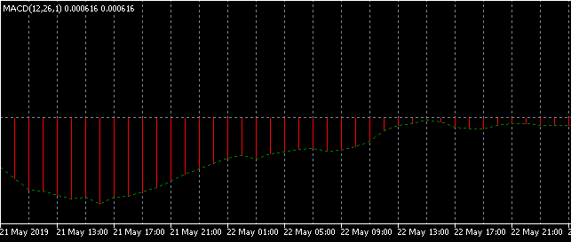
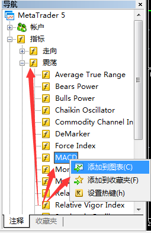
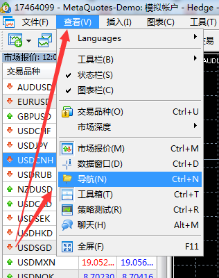
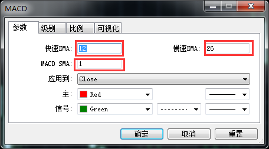
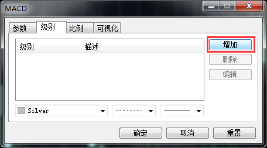
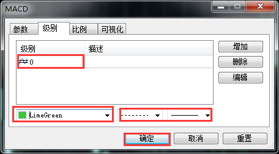
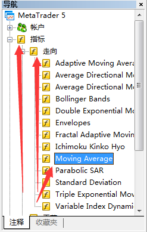
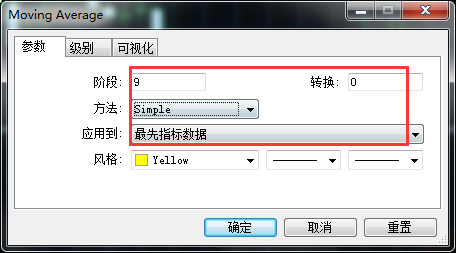
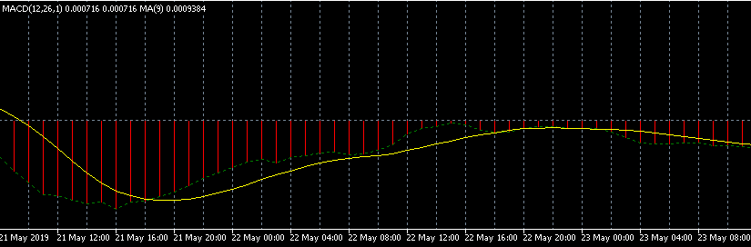

★怎麼在MT5上面添加雙線MACD指標?
MACD也是技術指標的一種。MACD稱為指數平滑異同平均線，是從雙指數移動平均線發展而來的，由快的指數移動平均線（EMA）減去慢的指數移動平均線。但是一般我們在MT5中直接在點擊添加的都是單線MACD，如下圖所示：

很多投資者都是在網上下載雙線MACD，今天小編教大家一個新技能，直接在MT5中添加雙線MACD。
MT5怎麼添加雙線MACD
一：在導航欄找到指標，然後可以看到震盪一欄，打開找到MACD指標，點擊鼠標右鍵，選擇“添加到圖表”

頁面沒有導航欄的話可以同時按住Ctrl+N，或者在查看欄找到導航。

二：根據自己的喜好設置參數

三：點擊添加級別

四：添加一條取值為“0”的級別，設置級別風格，點擊確定

五：在指標欄可以看到走向一欄，然後找到Moving Average，鼠標左鍵按住往MACD圖表中拖

六：拖到圖表中就會跳出設置參數的框框，階段為9，轉換為0 ，方法設置為Simple，應用到選擇最先指標數據，再點擊確定。

這樣我們就添加好雙線MACD啦！

小編看到了一篇在MT4添加雙線MACD的文章，有興趣的小伙伴點擊>>>怎麼在MT4上面添加雙線MACD指標？<<<
因為MT5中的常用指標大多都是英文，小編整理了一篇常用指標中英文對照，用力戳>>> MT5中常用的技術指標中英文對照<<<
本站部分文章基於互聯網的整理，我們會把真正“有用/優質”的文章整理提供給瀏覽者。如果文章所有者並不想本站轉載其文章，請郵件:  ，收到郵件後我們即刻回复，並即刻處理。
，收到郵件後我們即刻回复，並即刻處理。
，收到郵件後我們即刻回复，並即刻處理。
最新文章推薦
查看更多
- 1外匯逼空和軋空類似嗎？
今天，小編想給大家介紹外匯逼空和軋空的相關知識，下面我們一起去了解一下吧！如果大家要了解更多有關外彙的知識，點擊以下鏈接>>>>>>外匯中的加倉、補倉、平倉、開倉分別是什麼意思？。外匯逼空和軋空類似嗎......
- 2TRIX是什麼類型的指標？
- 3在mt4上怎麼查看美元指數的交易時間？
- 4外匯交易中重倉等於梭哈嗎？
- 5在mt4上怎麼查看交易訂單是否收取了手續費？
- 6MOM指標和MTM指標有什麼關係？
- 7在外匯中有槓桿和無槓桿的賬戶是怎麼算交易預付款的？
- 8在mt4上怎麼查看USDCNH貨幣對的合約細則？
- 9RVI指標和RSI指標在mt4中的名稱分別是什麼？
- 10在mt4上怎麼交易一手美元指數？